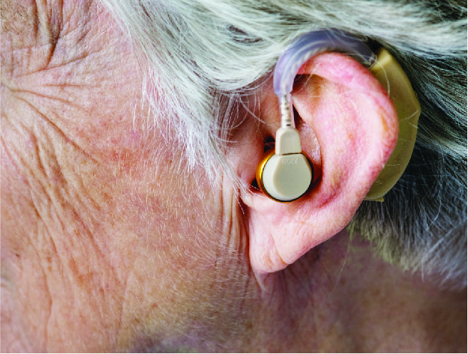
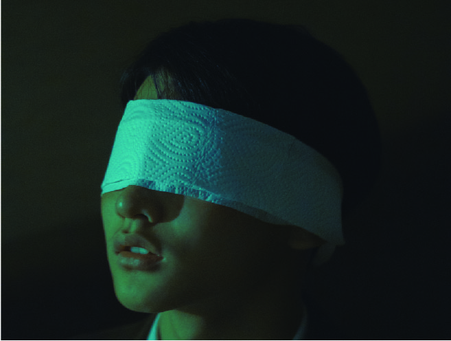
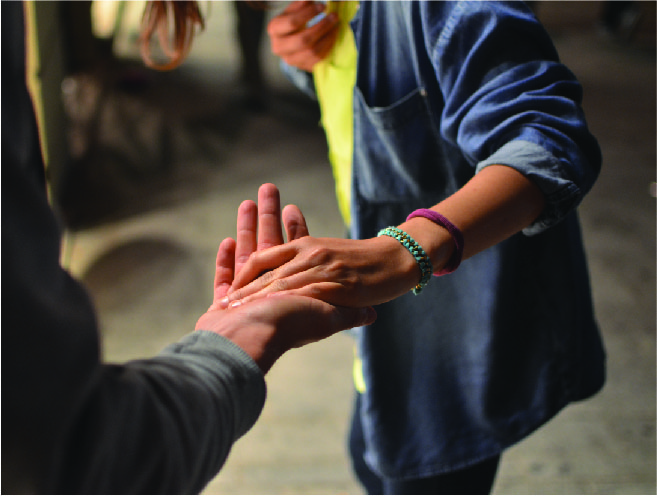

Slechthorend

Doofheid kan erfelijk zijn, of veroorzaakt worden door een ziekte of een ongeval. Voorbeelden van erfelijke vormen doofheid zijn het Syndroom van Usher, Syndroom van Waardenburg en de Ziekte van Van Buchem. In sommige families komt de erfelijke doofheid meerdere generaties voor, soms tot de 17e generatie. 5% van dove kinderen heeft twee dove ouders, nog eens 5% heeft 1 dove ouder. In geïsoleerde gebieden of in bepaalde geloofsgemeenschappen kan doofheid relatief vaker voorkomen als gevolg van inteelt. Voorbeelden van doofheid veroorzaakt door ziekte zijn hersenvliesontsteking, oorontsteking en rodehond tijdens de zwangerschap. Doofheid kan ook veroorzaakt worden door medicijnvergiftiging, tumoren, tympanosclerose of veroudering.
Verder kan doofheid veroorzaakt worden door langdurige en/of veelvuldige blootstelling aan harde geluiden. Prelinguaal doven zijn doof geboren of op zeer jonge leeftijd doof geworden (voor het derde levensjaar). Prelinguaal doven maken vaak gebruik van een eigen gebarentaal, die een andere grammatica heeft dan de gesproken taal. Wel is het zo dat veel Nederlandse of Vlaamse prelinguaal doven Nederlands als tweede taal beheersen, met name schriftelijk.
Lees verder...
Slechtziend

Vanaf de middeleeuwen tot het einde van de zeventiende eeuw is de blinde hetzij een verschoppeling, hetzij een begenadigde die materiële steun verdient omwille van zijn Godsverbondenheid. In het midden van de achttiende eeuw komt het 'blinde' kind in de kijker te staan onder invloed van de encylopedisten die de mens een nieuwe opgave maken. Valentin Haüy (1745-1822) is bekend van de oprichting van de eerste onderwijsinstelling.
Blinden werden lang bijvoorbeeld op kermissen belachelijk gemaakt, omdat de nadruk vooral bij de ontwikkeling van andere zintuigen lag. In 1784 stichtte Haüy de eerste klas voor twaalf blinde kinderen. Hij publiceerde in 1786 zijn Essai sur l'Education des Aveugles. Toch duurde het tot de geschriften van Pestalozzi e.a. en tot het recht op opvoeding bespreekbaar werd en sociaal-politieke betekenis verwierf vooraleer de in onwetendheid levende blinde kon worden 'vermenselijkt'. Ook de groeiende bekommernis van de katholieke kerk voor de gehandicapte en zwakke mens lag mede ten grondslag aan het idee, dat de persoon met een visuele handicap een zelfstandige mens onder de mensen moest worden. Einde achttiende, begin negentiende eeuw ontstonden de eerste onderwijsinstellingen voor blinden.
Lees verder...
Neuromotoriek

Een persoon met een lichamelijke of motorische handicap is iemand die door een probleem aan zijn lichaamsdelen gehinderd wordt in zijn handelingen en/of bewegingen. De handicap kan ontstaan doordat lichaamsdelen niet volgroeid of beschadigd zijn (fysieke afwijkingen) of doordat lichamelijke functies verstoord zijn (functionele afwijkingen).
Meestal wordt er voor personen met een ernstige lichamelijke handicap in een hulpmiddel voorzien om gemakkelijker te kunnen functioneren in de maatschappij. Iemand met een ernstige motorische handicap ter hoogte van de benen maakt vaak gebruik van een rolstoel. Mensen met een motorische handicap van de handen (uitvallen van de fijnmotoriek) of de armen kunnen dat compenseren met een manipulator of taakgespecialiseerde hulpmiddelen zoals een eetapparaat of bladomslagapparaat. Een rolstoel, manipulator, computer, communicatiehulpmiddel en andere apparatuur in de woonomgeving kunnen bediend worden met behulp van opnemers of sensoren. Voorbeeld hiervan: een schakelaar, trackball, spraakcomputer een toetsenbordje, een joystick, elektrodes om EMG of EEG te meten of een microfoon.
Lees verder...